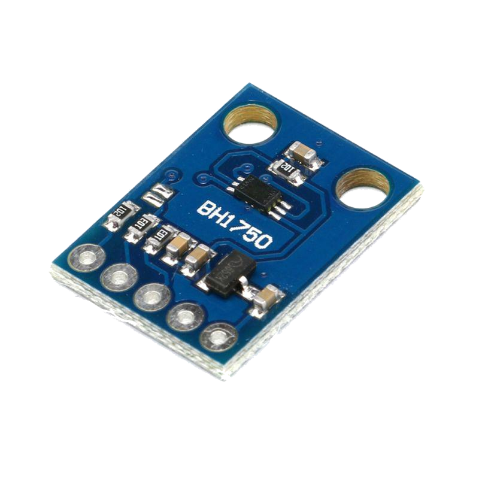

Características de iluminancia, transmitancia y absorbancia por distancia de material y con Arduino BH1750
900,0 lux

30,0 cm
(cm)
Tipo de Gráfica
Mueve el sensor y registra datos.
| r (cm) | E₁ (lux) | E₂ (lux) | E₃ (lux) | Promedio | 1/r² |
|---|